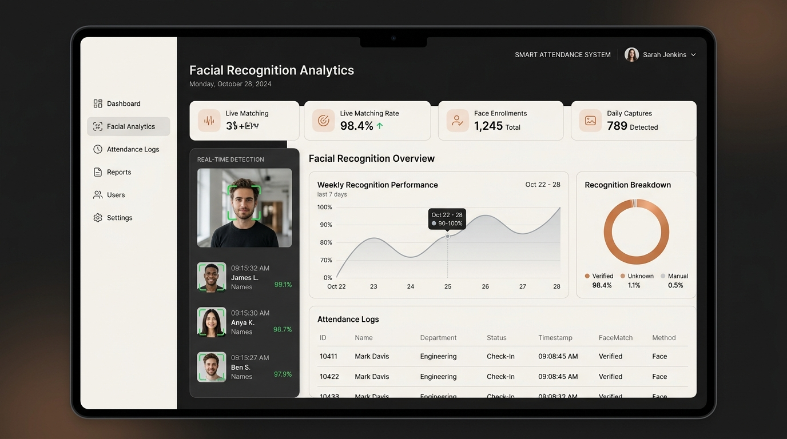

01 // AUTOMATION & VISION
Smart Attendance Management System
An automated biometric attendance platform engineered with computer vision algorithms to streamline institutional roll calls. Replaces manual verification with instantaneous multi-face recognition, accurate timestamp logging, and automated database synchronization.